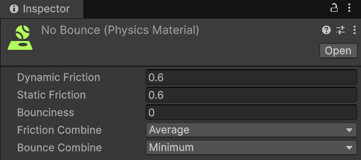
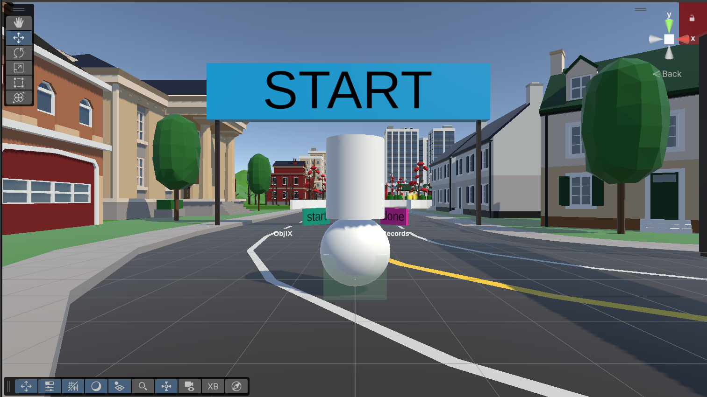

Week 5: Getting started with Airbending or rather Unitybending
This week was finally “hands on” instead of just thinking.
I started by forking and cloning the VR locomotion parkour repo from our course. The instructions said “open the VRParkour folder as a Unity project”, but when I did that and hit Play, the scene was completely empty.
After poking around a bit I realised I had just opened a blank scene. The real content is in Assets/Scenes/ParkourChallenge.unity. Once I opened that, suddenly the whole level, coins, banners, etc. showed up and actually ran on the Quest.
The next step was to prepare the scene for my Avatar air scooter idea. The original setup was first person, with the camera rig basically being the player. I wanted a third person view where the camera follows a character sitting on a ball of air.
So I:
-
Created an AvatarRoot object to act as the real player body in the world.
-
Made two children:
-
Airball – a white sphere that Aang will “sit” on.
-
avatar – a simple cylinder as a placeholder body.
-
-
Added a Rigidbody and a CapsuleCollider to AvatarRoot and made this the only solid collider for the avatar. The ball and cylinder are just visuals.
-
Gave the Capsule a NoBounce physics material so it doesn’t fly into the sky every time it touches the ground.

- Wrote a small script so that OVRCameraRig no longer moves by itself but instead follows AvatarRoot from behind with an offset, like a third-person camera. I basically used the similar one as I did for the Roll a Ball game.
public class ThirdPersonFollow : MonoBehaviour
{
public Transform avatarRoot; // the body we follow
public Transform hmd; // CenterEyeAnchor
public Vector3 offset = new Vector3(0f, 1.6f, -3f);
public float followLerp = 10f;
void LateUpdate()
{
if (!avatarRoot || !hmd) return;
// Use only the HMD's yaw so the camera stays behind the avatar
Vector3 euler = hmd.rotation.eulerAngles;
Quaternion yawOnly = Quaternion.Euler(0f, euler.y, 0f);
// Desired camera position
Vector3 targetPos = avatarRoot.position + yawOnly * offset;
// Smoothly move the rig there
transform.position = Vector3.Lerp(
transform.position,
targetPos,
1f - Mathf.Exp(-followLerp * Time.deltaTime)
);
// Look at the avatar from that position
transform.rotation = Quaternion.LookRotation(
avatarRoot.position - transform.position,
Vector3.up
);
}
}
By the end of the week I had:
-
The original parkour scene running,
-
A separate physical body (AvatarRoot) rolling through the world,
-
A third person camera that follows this body,
-
And a basic “Aang on a ball” setup ready to connect to my air scooter locomotion script next.

The actual hand gesture locomotion still needs work, but the foundation (project structure, avatar, colliders, camera) is finally in place. I also have a good idea now of how and where I should start my work. I took me about 2 days to figure out everything in the project since after roll a ball this is my second unity project. Yaras guides were very helpful.